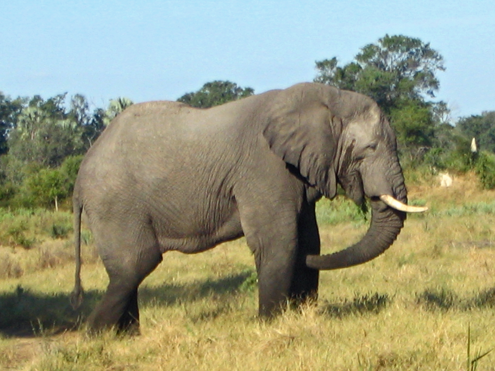

Африканський Слон
Опис і цікаві факти про африканських слонів...
Дізнайтесь більше про тварин, які живуть у нашому зоопарку.
Опис і цікаві факти про африканських слонів...
Білі ведмеді живуть у північних полярних регіонах і є одними з найбільших хижаків на землі.
Амурські тигри відомі своєю граціозністю та силою, вони здатні подолати великі відстані у пошуках їжі.
Папуги ара вирізняються яскравим оперенням і є одними з найрозумніших птахів у світі.